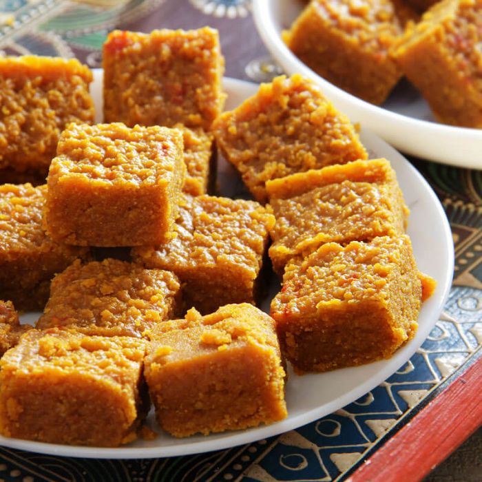

ગુજરાતી રેસીપી
ગુજરાતી રેસીપી| ગુજરાતી રેસીપી |
||
| Home | All Recipe | About |
જલ્દી થી મોહનથલ બનાવવાની રીત,મોહનથલ ની રેસીપી શીખીએ |
|
મોહનથલ બનાવવાની રીત |
|
|
 |
મોહનથલ બનાવવાની રીત:
|
|
|
|
||
ABOUT US |
||
| અમે ફૂડ ન્યૂઝ અને રેસિપી માટે દેશનું નંબર 1 ડેસ્ટિનેશન છીએ ટોચના રસોઇયાઓ અને રેસ્ટોરન્ટ્સમાંથી 6000+ ગોર્મેટ રેસિપિ દ્વારા સર્ફ કરો અને ખોરાક અને આરોગ્યની દુનિયાના નવીનતમ સમાચારો વિશે જાણો. |
||
Rating : |
Want The Latest Updates? | |
FOLLOW US ON : |


|
Subscribe to our Newsletter for updates on new recipes! |
Download our App : |
. |
|
Copyright © gujarati recipe. All Rights Reserved |
||